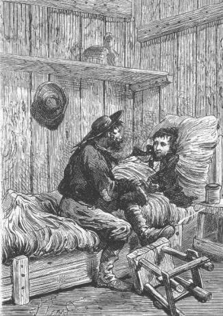

Thus, the convicts were still there, spying on the corral, and intent on killing the colonists one by one! There was nothing to do but treat them like wild beasts. But many precautions must be taken because these wretches had, at the moment, the advantage of the situation, being able to see yet not being seen, able to surprise by sudden attack yet not subject to surprise.
Cyrus Smith made arrangements for living at the corral where the provisions would suffice for a rather long time. Ayrton’s house had been provided with all that was necessary for life and the convicts, frightened by the arrival of the colonists, had not had time to pillage it. It was probable, as the reporter noted, that things had happened as follows: The six convicts, landing on the island, had followed the southern shore and after having doubled Serpentine Peninsula and not in the humor to venture into the woods of the Far West, they reached the mouth of Falls River. Once at this point, they ascended the right bank of the watercourse and arrived at the buttresses of Mount Franklin. It was natural that they would search for some retreat there, and they were not long in discovering the corral, then uninhabited. There they dug in, waiting for the moment to put their abominable plans into execution. Ayrton’s arrival surprised them but they had succeeded in overcoming the unlucky fellow and... the rest can be imagined.
Now the convicts—reduced to five it is true, but well armed—roamed the woods and to venture there would be to expose themselves to their fire, which they could do nothing to stop nor prevent.
“Let us wait! There is nothing else we can do,” repeated Cyrus Smith. “When Herbert will have recovered, we will be able to scour the island and get the better of these convicts. That will be the object of our grand expedition, while at the same time...”
“We will search it for our mysterious protector,” added Gideon Spilett, finishing the engineer’s sentence. “Ah, it must be admitted, my dear Cyrus, that this time his protection is in default at the very moment when we are most in need of it.”
“Who knows!” replied the engineer.
“What are you trying to say?” asked the reporter.
“That we are not at the end of our troubles, my dear Spilett, and that his powerful intervention will perhaps still have occasion to exercise itself. But it has not acted now. Herbert’s life before anything else.”
This was the colonists’ most painful preoccupation. Several days passed and the poor lad’s condition had fortunately not grown worse. Now this was gaining much over the illness. The cold water, which was always maintained at a suitable temperature, had absolutely prevented the inflammation of the wounds. It even seemed to the reporter that this water, which was a little sulphurous—this was explained by the vicinity of the volcano—had a most direct action on the cicatrization. The pus was much less abundant and thanks to the incessant care with which he was surrounded, Herbert came back to life and his fever tended to diminish. He was, besides, under a severe diet and consequently his weakness was and had to be extreme; but there was no lack of healthful beverages and absolute rest did him a world of good.
Cyrus Smith, Gideon Spilett and Pencroff became very proficient at dressing the young invalid. All the linen in the dwelling had been sacrificed. Herbert’s wounds were covered again with compresses and linen, neither too tight nor too loose, so as to allow their cicatrization without bringing on an inflammatory reaction. The reporter applied these dressings with extreme care knowing full well that it was important and he repeated to his companions what the majority of physicians willingly recognize: that it is perhaps rarer to see a dressing well done than an operation well done.
At the end of ten days, the 22nd of November, Herbert was definitely improving. He began to take some nourishment. The color returned to his cheeks and he smiled at his nurses. He chatted a little in spite of Pencroff’s efforts to speak to him all the time with the most unlikely tales to prevent him from speaking. Herbert questioned him on the subject of Ayrton. He was astonished not to see him near him, thinking that he must be at the corral, but the sailor, not wanting to distress Herbert, was content to reply that Ayrton had rejoined Neb in order to defend Granite House.
“Hey!” he said, “these pirates! Here are gentlemen who have no right to any consideration. And Mister Smith wanted to pay them his compliments! I will send them compliments myself with bullets from a gun.”
“And have they been seen again?” asked Herbert.
“No, my child,” replied the sailor, “but we will find them again, and when you will recover we will see if these cowards who shoot in the back will dare to attack us face to face.”
“I am still weak, my poor Pencroff.”

“I am still weak, my poor Pencroff.”
“Well! Your strength will come back little by little. What is a bullet through the chest? A simple joke. I have seen many others and I am not impressed.”
Everything seemed to be for the best and if no complication intervened, Herbert’s recovery could be regarded as assured. But what would have been the colonists’ situation if his condition had been aggravated, if for example, the bullet had remained in the body or if his arms or his legs had to be amputated.
“No,” Gideon Spilett said once more, “I have never thought of such an eventuality without shuddering.”
“And yet, if it had been necessary to do it,” Cyrus Smith asked him one day, “would you not have hesitated?”
“No, Cyrus!” said Gideon Spilett, “but thank God we were spared this complication.”
As in many other such circumstances, the colonists had appealed to the logic of simple common sense which served them much of the time and once again, thanks to their general knowledge, they had succeeded. But would there come a time when all their science would be of no avail? They were alone on this island. Now men complement each other in society. They need each other. Cyrus Smith knew this well and several times he asked himself if some circumstance would arise which they would be powerless to overcome.
Besides, it seemed to him that his companions and he, who were so fortunate until now, were entering an unlucky period. Since the more than two and a half years that they had escaped from Richmond, they could say that everything had gone their way. The island had furnished them abundantly with minerals, vegetables and animals, and if nature had been constantly generous to them, their science had known how to do its share with what was offered to them. The material well being of the colony was complete, so to say. Then again, in certain circumstances an unexplained influence had come to their aid... But all that could only be for a time!
In short, Cyrus Smith thought that luck was turning against them.
In fact, the convicts’ vessel had appeared in the waters of the island and if these pirates had been, so to speak, miraculously destroyed, six of them at least had escaped the catastrophe. They had landed on the island and the five who survived were very nearly unassailable. Ayrton doubtless had been massacred by these wretches who possessed firearms and at the first use that they had made of it, Herbert fell almost mortally wounded. Were these then the first strokes of a contrary fortune directed against the colonists? That is what Cyrus Smith asked himself. That is what he often repeated to the reporter and it seemed to them that this strange but effective intervention which had served them until now, was now in default. Had this mysterious being, whoever he was, whose existence they could not deny, had he then abandoned the island? Had he succumbed in his turn?
No response was possible to these questions. But we must not imagine that because Cyrus Smith and his companion spoke of these things that they were men to despair. Far from that. They looked the situation in the face, they analyzed their chances, they prepared themselves for any eventuality, they stood firm and straight before the future and if adversity should finally strike them, it would find men prepared to combat it.